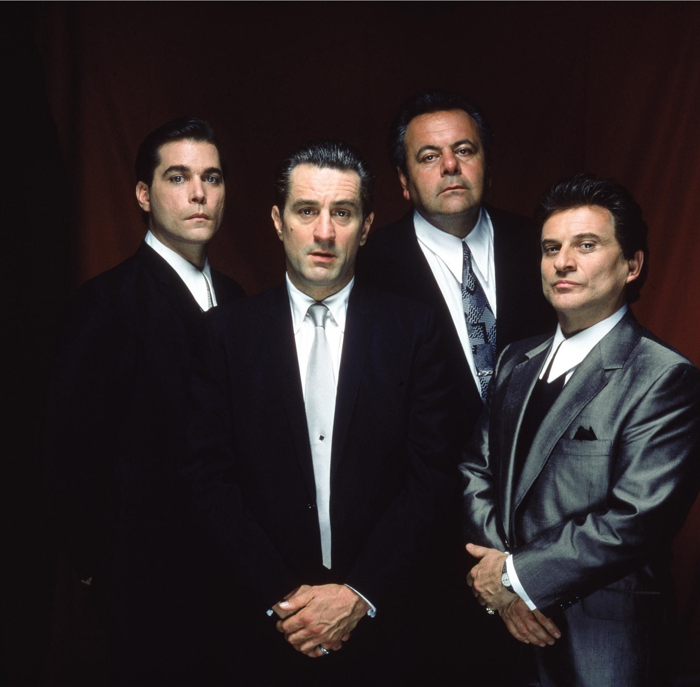
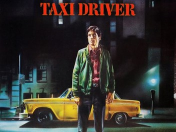
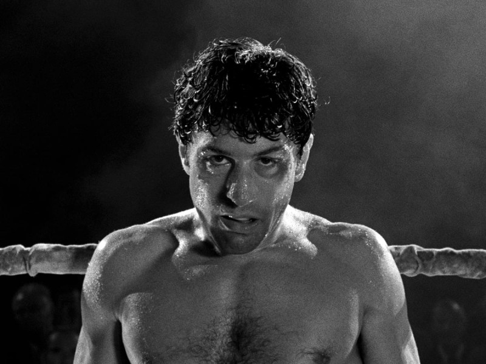

Estrenada en 1990, esta cinta dirigida por Martin Scorsese parece representar la antítesis del ideal cinematográfico de "El Padrino" (1972). Una película sobre el mundo de la mafia, pero sin romantización o tragedia, sino con un toque satírico y brusco. "Uno de los nuestros" en España y "Buenos Muchachos" en Latinoamérica, "Goodfellas" representa el momento en que Scorsese se reencuentra con crítica y público de manera sobresaliente". 3.TAXI DRIVER 
En el contexto del desarrollo del Nuevo Hollywood, el joven cineasta Martin Scorsese dirigió esta peculiar película que marcaría una época en la historia del cine. Peculiar porque presentaba a Nueva York de una forma diferente a la que se conocía por la edad dorada de Hollywood. Además, tenía un considerado contenido violento gráfico para el momento. Por si fuera poco, mandaba un mensaje potente y sensible sobre los traumas de la guerra, la salud mental, la soledad, la caída de la moral en la sociedad y la violencia en las calles.
4. RACING BULL

Basada en la vida del autodestructivo boxeador profesional Jake LaMotta, el "Toro del Bronx", "Toro Salvaje" nos sumerge en una historia de odio, violencia y culpa, en un momento delicado de la vida de su director, Martin Scorsese. En medio de su adicción a la cocaína y del fracaso de "New York, New York" (1977), Robert De Niro convenció a Scorsese de rodar una película basada en un libro autobiográfico del mismo Jake LaMotta.
5.FIGHT CLUB
Me parece que lo interesante de esta película esta en la estructura que tiene la misma, donde la película siempre esta en constante construcción, ya sea en personajes, locaciones, tramas y sub tramas, donde si te descuidas te puedes perder de cosas tan insignificantes que en como va evolucionando la historia se vuelven fundamentales.